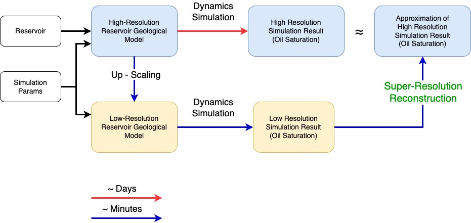
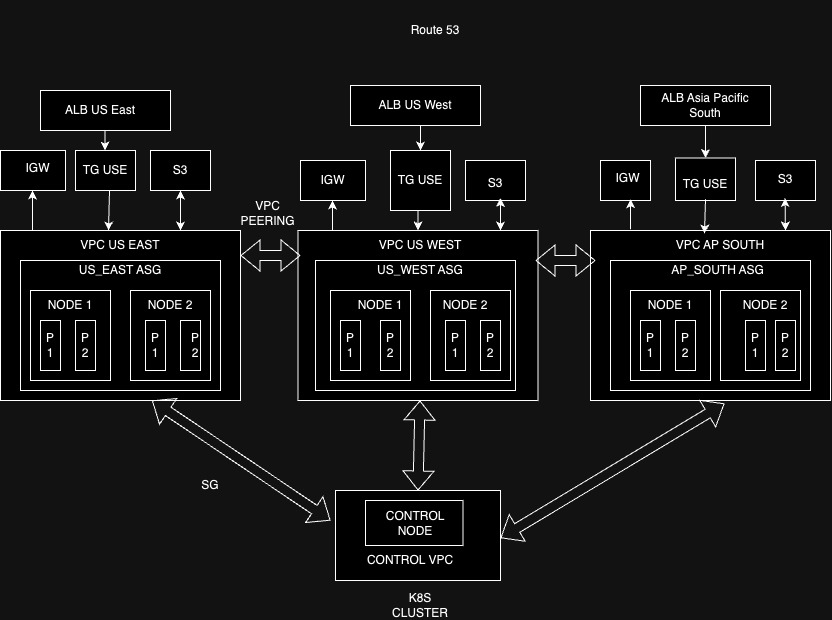

Nandita Doloi
Work Portfoloi Website
Sharing the parts of the data pipeline I have worked in starting from raw data to Business Intelligence and Machine Learning Model.
DevOps to ML
Over the years I have been fortunate to learn and work on all aspects of the Data Pipeline. Here I showcased the tools that I have used and the products that I have built.
&
Charging Stations
I developed REST API and websocket based cloud
application using Golang, python and NodeJS.

Each app needs to be highly available, and should
be able to scale cost-effectively based on the number of vehicles and chargers.
Therefore, I deployed K8s clusters on three platforms: GCP, AWS, Tata
Communications to stress test each and find the most cost efficient solution.
Following is a diagram of the system I deployed.

I adopted a message queue based backbone,
which is
more versatile than communicating over REST APIs. Event data from EVs are
streamed onto a Kafka message queue. Multiple state-holders like Dealership,
Analytics Dashboard, DataScience team can consume it in parallel. Adding /
removing consumers is trivial.

At 5XData, I worked with many clients.
I deployed
Fivetran and Zapier based connectors to extract and load data from variety of
sources like Google Sheets, HubSpot, MixPanel, Salesforce, PostgreSQL and
Webhooks.
I am experienced with data validation, batch imports, data
freshness tests and data migration.

Low-latency read/write caches: Redis,
ElastiCache.
SQL: PostgreSQL, MySQLdb, Snowflake
NoSQL: MongoDB,
DynamoDB, Firebase
Time-series: InfluxDB
Data Lakes: AWS S3
At 5XData I mostly used DB as a service
(DBaaS)
providers, however at Tork Motors, I got a chance to deploy and manage
InfluxDB on Google Kubernetes Cluster. Using custom scaling methods, and
distributing the data among multiple instances in the cluster, I was
able to
provide a highly-available and cost-effective solution. It reduces the cost
of operation by 70%.
I took care of security,
nginx based ingress control, role-based access and integration with grafana
dashboard. This setup allowed multiple concurrent read and writes from Tork
Motors EVs. Data from the EVs were available on Grafana dashboards in
real-time for the Dealers and DataScience teams.

I worked on Personal Identifiable Information
(PII)
employee data where I had to maintain tight role-based access control (RBAC)
across the organization.

Whenever we load data from a new client onto our
Snowflake warehouse, I would design the scema and data model. I have extensively
used Snowflake and I am familiar with Google Big Query. To handle large data
cost-effectivelty, I have built incremental models, reuseable ephemeral
models
and views.

I helped my previous employer 5XData obtain
certification from DBT. The certification is based on a review of projects that
I completed using the best-practices of DBT at 5XData.
While data
models and schemas are very important, the SQL codebase that is used to
transform the data is very crucial for development. I used
jinja based macros to make my SQL code be reusable and
modular.
Transformations in these databases are very
specific to the type of the database. I am very experienced with MongoDB
aggregation framework.
I am familiar with Flux queries used in
InfluxDB, and PySpark to query json-structured data.
For big-data analysis, I have used MapReduce
paradigm to performs transformations across large datasets.


As a graduate student researcher at Indian
Institute of Technology Delhi, India (IIT Delhi), I attempted to solve a
crucial
problem being faced by the Petroleum industry. With this solution, a pre-trained
model traning on large diverse dataset can be used to first fine-tune based on
small field data and then finally predict oil saturation over large
field-area.
I presented my research paper at SPE 2023, Abu
Dhabi.

I used Neural Networks with Physics
Constraints to
predict key parameters of a chemical reaction process based on easily available
sensor data. These key parameters like moisture content are not otherwise easy
to measure. My model would allow real-time estimates to help control the
process.
My implementation of Physics-Informed Neural
Networks on Github has gained many followers: Repository Link
At PredictivEye, I deployed Neural Network
models
on a GPU enabled instance on AWS. I employed quantization, compute graph
optimization and Nvidia TensorRT tricks to make large models like Graph Neural
Networks to respond in 5ms. This model was then made accesible on a REST API
through AWS Lambda.
I created a Video-on-demand service using the best
practises to load-balance and serve users with video from their nearest
datacenter.

I want to build infrastructure. I find it extremely
satisfying to
lay the foundation on which great stuff is built.